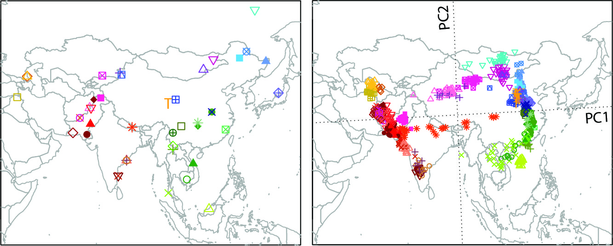

Statistical Genetics and Population Genetics

{kind=link}
Statistical Genetics and Genomics
Our methodology research in statistical genetics focuses on two questions: (1) How to control for population stratification, family relatedness, and study design to avoid inflated type 1 error in genetic association studies? (2) How to combine genetic information across different studies and across different variants to increase the statistical power of association tests? These are two fundamental questions in statistical genetics, and they remain challenging for sequence-based association studies where the focus is rare variants with very low allele frequencies. We have been working on a series of methods based on multivariate statistical techniques and generalized linear models to tackle these two questions. For example, we have developed a method called LASER (Wang et al. 2014, Nature Genetics; Wang et al. 2015, AJHG), which enables accurate ancestry estimation for samples with extremely low coverage sequencing data and thus provides critical information to control for population stratification in downstream analyses.
Moving forward, we are also interested in integrative genomics approaches to combine information across different types of genomics data to help us understand disease biology.
 Figure: The LASER software package implements a unified statistical framework to estimate an individual's genetic ancestry in a reference ancestry space using either low-coverage sequence reads or genotyping data. (Wang et al. 2014, Nature Genetics; Wang et al. 2015, AJHG) |
Population Genetics
Spatial patterns human genetic variation provides the basis to understand the phenotypic variation of human populations and to infer evolutionary events in human history, such as migration, selection, and admixture. With the large amount of data accumulated from population genetic studies and disease studies, we are interested in studying the population structure of diverse populations to learn about human history and to search for signals of natural selection. In a previous study, we performed a systematic evaluation of the geographic structure of human genetic variation based on microarray genotype data from ~150 populations worldwide (Wang et al. 2012, PLoS Genetics). The large amount of rare variants from sequencing experiments can provide more detailed insights into human population structure and history. We will continue our research in this direction by using existing methods and developing new tools and statistics to analyze sequencing data. While we maintain broad interests in worldwide populations, one future focus of the lab will be on Asian populations.
|  | Figure: Significant similarity between genes and geography was found in Asia based on principal components analysis (PCA) and Procrustes analysis on SNP genotypes of 43 Asian populations.(Wang et al. 2012, PLoS Genetics) |